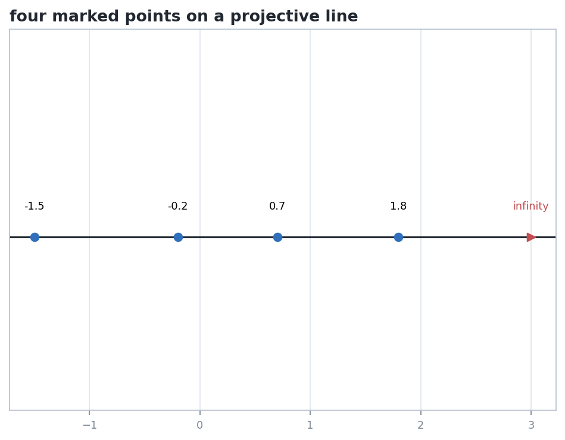
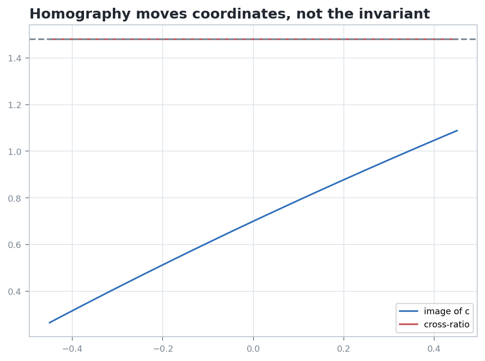

The projective line is the smallest arena where coordinates can move wildly while one ordered-four-point quantity stays fixed.
Represent a point as a one-dimensional subspace of \(k^2\), then choose an affine chart only when a coordinate is needed.
An ordered quadruple \((A,B;C,D)\) carries a scalar that survives every homography of the line.
Matrices in \(PGL_2(k)\) act as fractional linear maps, sending triples to triples and preserving incidence.
When a diagram changes coordinates, raw positions are expendable. The invariant relationship among the four labeled points is the durable object.
\( \mathbb{P}^1(k) = (k^2 \setminus \{0\})/k^\times \)
For four distinct finite chart coordinates \(a,b,c,d\), define
\[ (A,B;C,D)=\frac{(c-a)(d-b)}{(c-b)(d-a)}. \]
Cases involving \(\infty\) are obtained by cancellation or by taking the limiting coordinate.
\(M=\begin{pmatrix}\alpha&\beta\\ \gamma&\delta\end{pmatrix}\), with \(\det M \ne 0\)
\[ [X:Y] \mapsto [\alpha X+\beta Y:\gamma X+\delta Y]. \]
If \(H\) is a homography of \(\mathbb{P}^1(k)\), then for every ordered quadruple of distinct points,
\[ (H A,H B;H C,H D)=(A,B;C,D). \]
\[ [u,v;w,z]= \frac{\det(u,w)\det(v,z)}{\det(v,w)\det(u,z)}. \]
Under a homography, gaps, slopes, and finite coordinates may change. The determinant ratio is the object that has no reason to move.
For distinct \(A,B,C\), there is a unique homography sending
\[ A \mapsto 0,\quad B \mapsto 1,\quad C \mapsto \infty . \]
The cross-ratio of \((A,B;C,D)\) is the coordinate assigned to the fourth point by this normalized frame.
If \(\lambda=(A,B;C,D)\), all 24 reorderings reduce to these six expressions:
| Value | Typical reordering |
|---|---|
| \(\lambda\) | identity or double swaps |
| \(1/\lambda\) | swap \(A,B\) and compare |
| \(1-\lambda\) | move \(B\) into the third slot |
| \(1/(1-\lambda)\) | compose the previous two moves |
| \(\lambda/(\lambda-1)\) | interchange a source and target label |
| \((\lambda-1)/\lambda\) | the remaining companion value |
A pair \((C,D)\) is harmonic with respect to \((A,B)\) when
\[ (A,B;C,D)=-1. \]
Intersect four lines of a pencil with any line not through the center. The resulting four points on the transversal define the cross-ratio of the pencil.
Changing the transversal applies a homography to the intersection line, so the scalar is independent of that auxiliary choice.
A nonidentity homography \(I\) is an involution when \(I^2\) is the identity projective map.
\[ x \mapsto \frac{\alpha}{x} \]
This normalized model swaps \(0\) with \(\infty\) and pairs each \(x\) with \(\alpha/x\).


The visual summary records \(1.4814814814814816\) before the homography and \(1.4814814814814814\) afterward, matching to floating-point precision.
Use \(a=-1.5\), \(b=-0.2\), \(c=0.7\), \(d=1.8\) and evaluate \((A,B;C,D)\).
Apply \(x \mapsto (x+0.3)/(0.08x+1)\). Recompute the cross-ratio from the four image points.
Swap \(B\) and \(C\). Decide which of the six companion values appears, rather than expecting the original scalar.
Students should answer in projective language: the labeled quadruple under a homography kept its cross-ratio, while a relabeling changed the invariant being asked for.